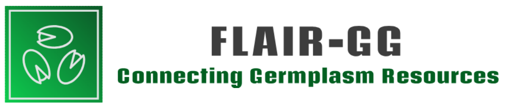

FLAIR-GG Virtual Platform
A federated network of germplasm banks that connects, under FAIR principles, the data resources of multiple institutions — with BGV-UPM as the model bank.
From data silos to a connected network
Fragmentation and a lack of interoperability between the databases of wild-species germplasm banks — and between these and external providers of ecogeographic information — make it difficult to design global conservation strategies and limit their use in restoration projects. Existing centralised repositories are, moreover, incomplete and easily become outdated.
FLAIR-GG is a federated network of germplasm banks based on the FAIR principles (Findable, Accessible, Interoperable, Reusable) that integrates sample passport data from multiple institutions to improve its management, documentation and use. The procedure was developed and validated using BGV-UPM’s passport data as the model bank, in two phases: taxonomic standardisation and mapping to ontologies.
Each bank’s metadata — which datasets it offers and how to access them — is published as a FAIR Data Point (FDP), queryable by both people and machines. The platform incorporates an index of FDPs with references to each bank’s FDP (six so far) and keeps the information synchronised as the banks’ databases are updated.

Explore, search and connect the network
Explore the network
Browse the catalogues, datasets, distributions and services of every member bank from a single place, with no need to centralise the data.
Keyword search
Find resources across the network whose metadata contains a search term, through a simple form.
Ontology-based search
Find resources annotated with a term from a given ontology, by its URI.
Advanced SPARQL queries
For more complex questions — counting, grouping, filtering by date, or finding who is responsible for a resource — query the FDP index directly with SPARQL 1.1.
Run services across the network
Pick a data-service type — IUCN threat category, for instance — and run it at once against every bank that offers it.
Word cloud
See at a glance which types of data services are available across the network.
A bridge to artificial intelligence
The platform exposes an MCP (Model Context Protocol) endpoint, so AI assistants such as Claude can query the federated network directly: keyword searches, SPARQL queries, or one-off checks such as a species’ IUCN threat status across every bank that publishes it — with no need to know the internal structure of each database.
- Each tool documents its own use, with query examples and good practice for “who is the contact person” questions.
- Providers are discovered dynamically: a new or relocated bank is picked up automatically, with no changes to the platform’s code.
- For data-analysis tasks, the platform points to reference notebooks (FLAIR-GG-Analytics) with worked examples, such as IUCN species categorisation.
About FLAIR-GG
FLAIR-GG is described in the following peer-reviewed paper:
Cámara Ballesteros, A., Aguayo Jara, E., Verykaki, E. S., Pastor del Olmo, G., Moreno Vázquez, S., Torres, E., & Wilkinson, M. D. (2024). The FLAIR-GG federated network of FAIR germplasm data resources. Scientific Data, 11, 1386.
doi.org/10.1038/s41597-024-04243-7 ↗